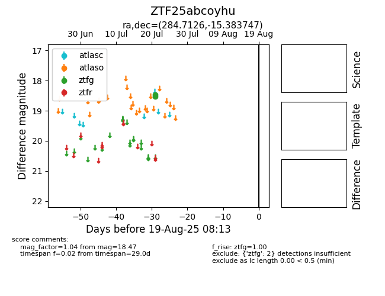

Target ZTF25abcoyhu at 2025-08-19 09:59, see:
FINK: fink-portal.org/ZTF25abcoyhu
Lasair: lasair-ztf.lsst.ac.uk/objects/ZTF25abcoyhu
ALeRCE: alerce.online/object/ZTF25abcoyhu
alt names
ZTF25abcoyhu (ztf,fink)
coordinates:
equatorial (ra, dec) = (284.7126,-15.38375)
galactic (l, b) = (19.9657,-8.55237)
photometry
last ztfg=18.47
2 ztfg detections
